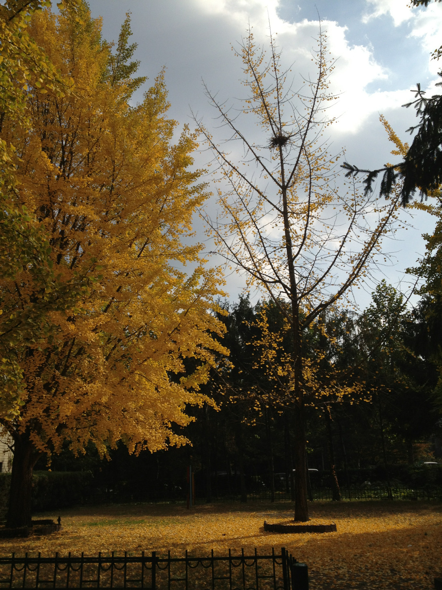

가끔은 그냥 이무이유없이 답답할 때가 있다. 그리고 누군가에게 그 답답함을 없앨 수 있는 질문과 대답을 알면서도 못할때가 있다. 그 말이 내 입을 통해 밖으로 나가야만 함에도 아직 누구에게도 하지 못한말이 있다. 그리고 여전히. 못한다. 못하겠다. 그럴 상황이 온다고 해도 나는 못할 것 같다. 그저 혼자 해결하겠지. 그게 어떤 결말이든간에.
나는 그런사람이니까.
가끔 난 놀랍도록 용감하지만 그럴 필요까지 없음에도 그렇게 상황을 만든다. 답답함은 그렇게 계속된다.